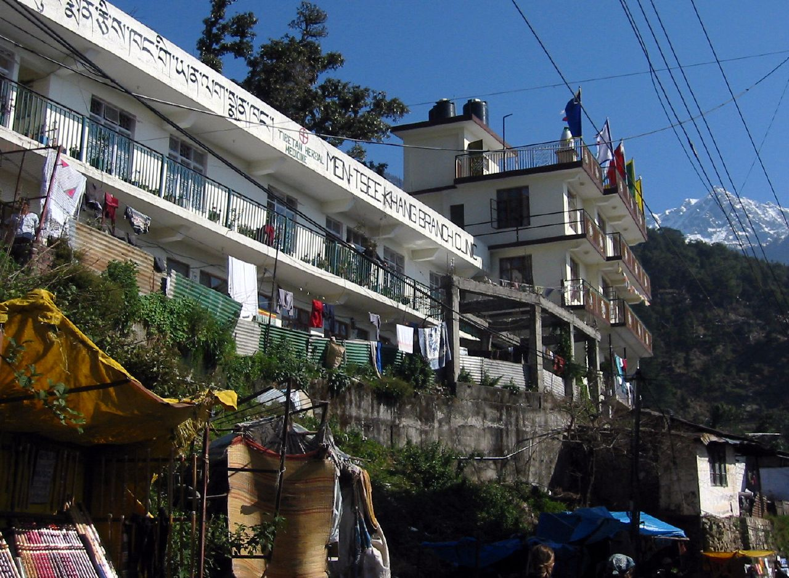

藏医学 —— 雪域高原的明珠
藏语称为"索瓦日巴"，是藏民族在青藏高原独特自然与人文环境中创造出的完整医学体系

理论基础
藏医学运用土、水、火、风、空五种物质之间的关系来解释人体的形成、疾病的发生、药物的性能。藏医学认为，隆、赤巴和培根这三种因素是构成人体的物质，同时又是进行生命活动不可缺少的能量和基础。在正常情况下，三者之间平衡协调；若出现偏盛或偏衰，身体就处于病理状态。藏医运用望、问、切等诊断方法来判断隆、赤巴、培根的失衡情况，治疗方法主要有饮食、起居、药物、外治四种，其中调整饮食和起居为首选方法。
对于药物的认识，藏药经典著作《晶珠本草》（18世纪）中记载藏药2294种，分为13类，去除重复后有近1200味药物。
历史沿革
2018年《Science》刊文证实，古人类在距今4万至3万年前已活动在青藏高原海拔4600米左右的地区。随着人类生活和生产实践的开展，对生命和疾病的认识逐渐积累。藏医古籍中有"最早的疾病是消化不良，最初的药是开水"的记载。7世纪初，松赞干布建立吐蕃王朝，多个不同医学学派在吐蕃争鸣。公元8世纪末，藏族著名医家宇妥宁玛·云丹贡布集藏医之大成，编著了《四部医典》，并由其第十三世孙于12世纪将其补充完善最后定稿。
《四部医典》藏文译名为《据悉》，全书分为四部分：第一部《根本医典》（6章）总纲；第二部《论说医典》（31章）基础理论；第三部《秘诀医典》（92章）临床各科；第四部《后续医典》（27章）诊断与疗法。该书已被译成英、德、蒙古、日、俄等多种文字。
发展现状
在西藏、青海、四川、甘肃、云南等主要藏族聚居地区都设有藏医医院。西藏自治区藏医院是国家中医药管理局指定的民族医临床研究基地；西藏藏医药大学和青海大学藏医学院设有全国藏医博士学位授予点。1995年卫生部公布了《药品标准·藏药》。
2018年5月，《四部医典》进入《世界记忆亚太地区名录》；2018年11月，"藏医药浴法"被列入联合国教科文组织人类非物质文化遗产代表作名录。